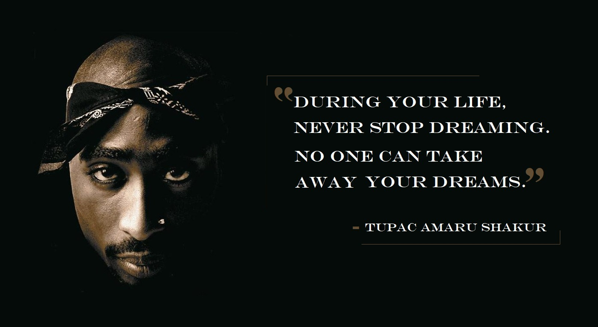

Tupac Amaru Shakur
06.16.71 - 09.13.96

American rapper and actor.
American rapper and actor.
Considered by many as one of the best rappers of all time.
Albums
- Released: November 12, 1991 (US)
- Labels: Jive Records, TNT, Interscope Records
- Formats: CD, LP, cassette, digital download
- Released: March 14, 1995 (US)
- Labels: Jive, Interscope
- Formats: CD, LP, cassette, digital download
- Released: February 13, 1996 (US)
- Labels: Death Row, Interscope
- Formats: CD, LP, cassette, digital download
2Pacalypse Now
Me Against the World
All Eyez on Me
Movies
- Released: January 17, 1992 (US)
- Directed By: Ernest R. Dickerson
- Produced by: David Heyman, Neal H. Moritz, Peter Frankfurt
- Budget: $5 million
- Box Office: $20.1 million
- Released: July 23, 1993 (US)
- Directed By: John Singleton
- Produced by: John Singleton, Steve Nicolaides, Dwight Alanzo Williams
- Budget: $14 million
- Box Office: $27 million
- Released: March 23, 1994 (US)
- Directed By: Jeff Pollack
- Produced by: James D. Brubaker, Benny Medina, Jeff Pollack
- Budget: $6.5 million
- Box Office: $16.2 million
Juice
Poetic Justice
Above the Rim
To learn more about Tupac Shakur and his life and career - singles, live albums, re-mix and collaborations, visit the Tupac Shakur WikiPedia page for more information.
Site built by Marcus Lising for educational puposes (freeCodeCamp)